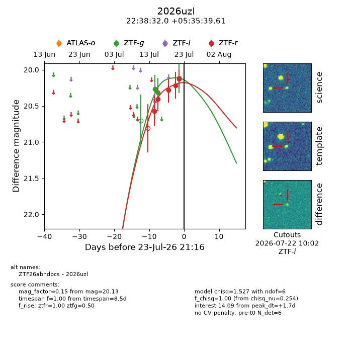
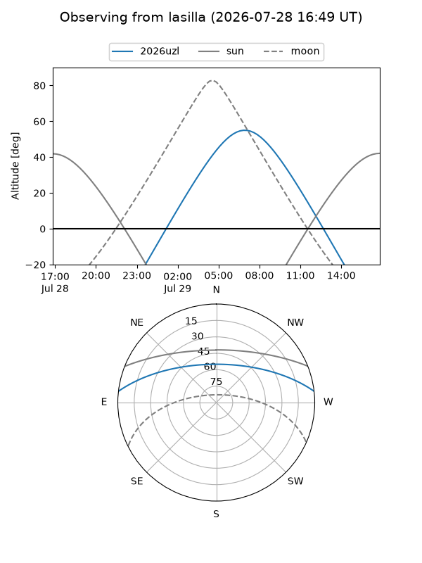
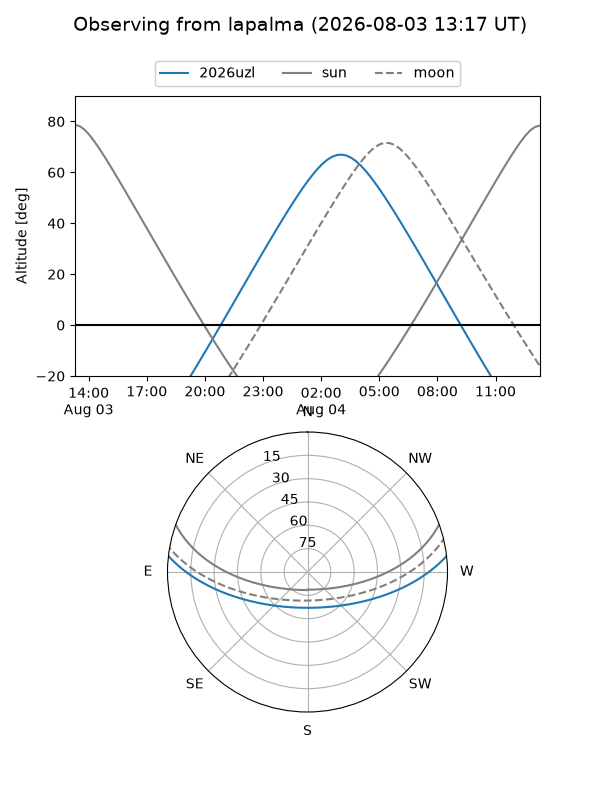
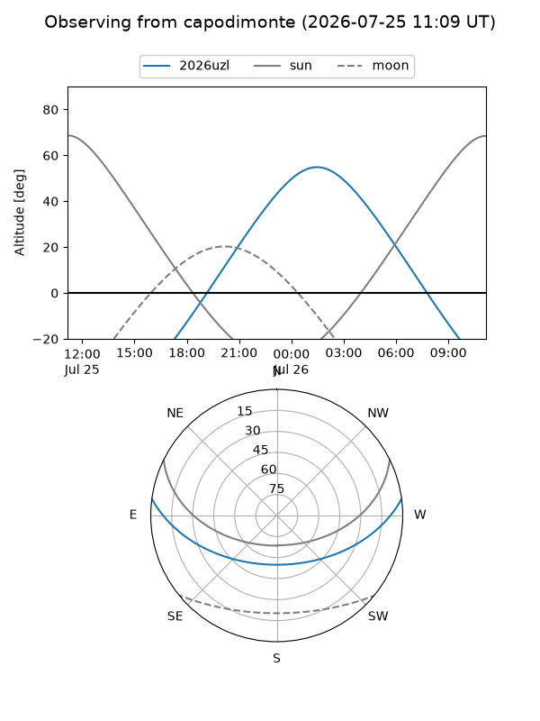
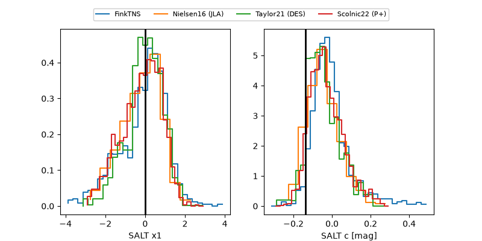

2026uzl
Target 2026uzl at 2026-07-23 21:19
Aliases and brokers:
FINK-ZTF: ztf.fink-portal.org/ZTF26abhdbcs
Lasair-ZTF: lasair-ztf.lsst.ac.uk/objects/ZTF26abhdbcs
ALeRCE-ZTF: alerce.online/object/ZTF26abhdbcs
YSE-PZ: ziggy.ucolick.org/yse/transient_detail/2026uzl
TNS name: wis-tns.org/object/2026uzl
Direct TNS query: direct search
alt names
ZTF26abhdbcs (ztf,fink_ztf)
2026uzl (tns,yse)
Coordinates:
equatorial (ra, dec) = 339.6335,+5.59434
equatorial (HMS+DMS) = 22:38:32.03,+05:35:39.61
galactic (l, b) = (73.4697,-44.14620)
Flags:
TNS type: nan
peak dt: +1.7
Photometry:
last ztfg=20.12, ztfr=20.13
3 ztfg, 5 ztfr detections
Lightcurve

Visibility



Additional plots
